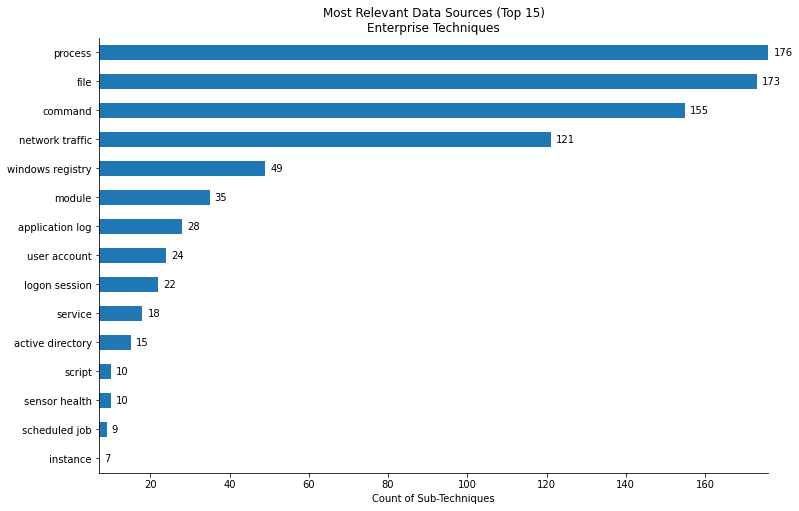
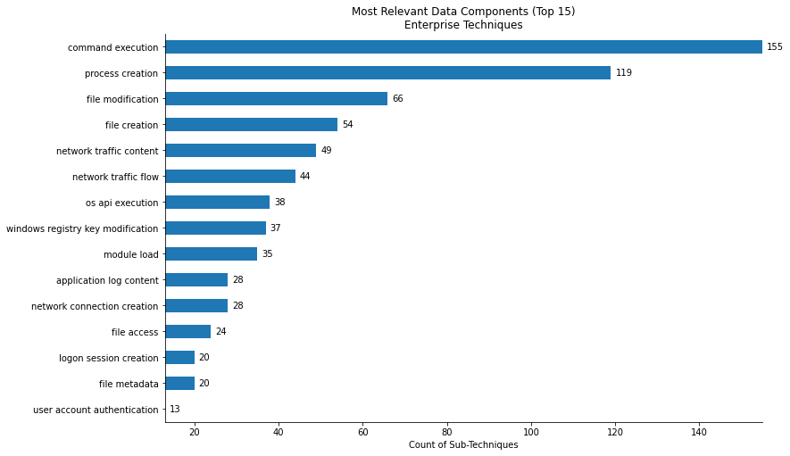
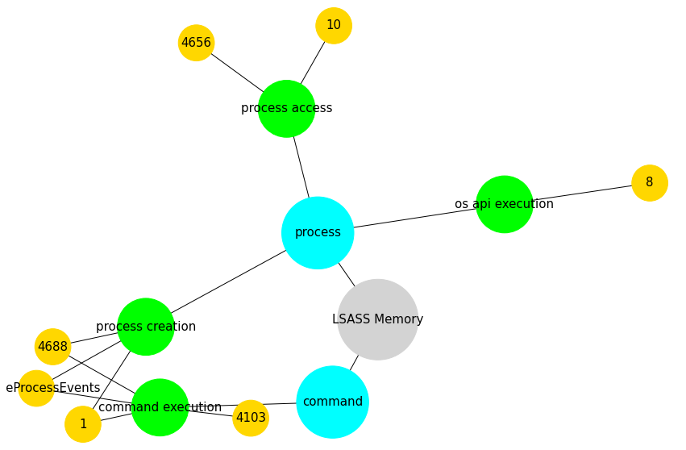

ATT&CK Techniques to Security Events¶
Author: Jose Luis Rodriguez - @Cyb3rPandaH
Organization: Open Threat Research (OTR)
References:
Data Sources, Containers, Cloud, and More: What’s New in ATT&CK v9?
Defining ATT&CK Data Sources, Part I: Enhancing the Current State
Defining ATT&CK Data Sources, Part II: Operationalizing the Methodology
Importing Python Libraries¶
# Importing library to manipulate data
import pandas as pd
# Importing library to manipulate yaml data
import yaml
import requests
# Importing library for visualizations
from openhunt import visualizations as vis
Importing (Sub)Techniques to Security Events Mapping Yaml File¶
Using the attackcti Python library, we were able to collect all the techniques within the Enterprise matrix. After that, we mapped several security events to each data source/component/relationship. Here is the result:
yamlUrl = 'https://raw.githubusercontent.com/OTRF/OSSEM-DM/main/use-cases/mitre_attack/techniques_to_events_mapping.yaml'
yamlContent = requests.get(yamlUrl)
yamlMapping = yaml.safe_load(yamlContent.text)
mapping = pd.json_normalize(yamlMapping)
mapping.head()
| technique_id | x_mitre_is_subtechnique | technique | tactic | platform | data_source | data_component | name | source | relationship | target | event_id | event_name | event_platform | audit_category | audit_sub_category | log_channel | log_provider | |
|---|---|---|---|---|---|---|---|---|---|---|---|---|---|---|---|---|---|---|
| 0 | T1553.006 | True | Code Signing Policy Modification | [defense-evasion] | [Windows, macOS] | windows registry | windows registry key modification | Process modified Windows registry key | process | modified | windows registry key | 13 | RegistryEvent (Value Set). | Windows | RegistryEvent | NaN | Microsoft-Windows-Sysmon/Operational | Microsoft-Windows-Sysmon |
| 1 | T1553.006 | True | Code Signing Policy Modification | [defense-evasion] | [Windows, macOS] | windows registry | windows registry key modification | Process modified Windows registry key | process | modified | windows registry key | 14 | RegistryEvent (Key and Value Rename). | Windows | RegistryEvent | NaN | Microsoft-Windows-Sysmon/Operational | Microsoft-Windows-Sysmon |
| 2 | T1553.006 | True | Code Signing Policy Modification | [defense-evasion] | [Windows, macOS] | windows registry | windows registry key modification | Process modified Windows registry key | process | modified | windows registry key | 4670 | Permissions on an object were changed. | Windows | Object Access | Registry | Security | Microsoft-Windows-Security-Auditing |
| 3 | T1553.006 | True | Code Signing Policy Modification | [defense-evasion] | [Windows, macOS] | windows registry | windows registry key modification | Process modified Windows registry key | process | modified | windows registry key | DeviceRegistryEvents | DeviceRegistryEvents | Windows | None | NaN | None | Windows Defender Advanced Threat Protection |
| 4 | T1553.006 | True | Code Signing Policy Modification | [defense-evasion] | [Windows, macOS] | windows registry | windows registry key modification | Process modified Windows registry key value | process | modified | windows registry key value | 13 | RegistryEvent (Value Set). | Windows | RegistryEvent | NaN | Microsoft-Windows-Sysmon/Operational | Microsoft-Windows-Sysmon |
Which are the most relevant data sources for Sub-Technqiues within the Enterprise Matrix?¶
enterprise_sub = mapping[mapping['x_mitre_is_subtechnique'] == True][['technique_id','data_source','data_component']].drop_duplicates()
top15_data_source = enterprise_sub['data_source'].value_counts().nlargest(15).to_frame().reset_index()
title = 'Most Relevant Data Sources (Top 15)\nEnterprise Techniques'
vis.barh_chart(top15_data_source,'data_source','index',title, xlabel = 'Count of Sub-Techniques')

Which are the most relevant data components for Sub-Technqiues within the Enterprise Matrix?¶
enterprise_sub = mapping[mapping['x_mitre_is_subtechnique'] == True][['technique_id','data_source','data_component']].drop_duplicates()
top15_data_source = enterprise_sub['data_component'].value_counts().nlargest(15).to_frame().reset_index()
title = 'Most Relevant Data Components (Top 15)\nEnterprise Techniques'
vis.barh_chart(top15_data_source,'data_component','index',title, xlabel = 'Count of Sub-Techniques')

Use Case: OS Credential Dumping: LSASS Memory (T1003.001)¶
What are the recommended data sources?¶
mapping[mapping['technique_id']=='T1003.001'][['data_source', 'data_component']].drop_duplicates()
| data_source | data_component | |
|---|---|---|
| 3383 | process | process creation |
| 3389 | process | process access |
| 3391 | command | command execution |
| 3399 | process | os api execution |
What security events can we use to get more context about this technique?¶
Network Graph
vis.attack_network_graph(mapping[(mapping['technique_id']=='T1039')])

Table
mapping[mapping['technique_id']=='T1003.001']
| technique_id | x_mitre_is_subtechnique | technique | tactic | platform | data_source | data_component | name | source | relationship | target | event_id | event_name | event_platform | audit_category | audit_sub_category | log_channel | log_provider | |
|---|---|---|---|---|---|---|---|---|---|---|---|---|---|---|---|---|---|---|
| 3383 | T1003.001 | True | LSASS Memory | [credential-access] | [Windows] | process | process creation | Process created Process | process | created | process | 4688 | A new process has been created. | Windows | Detailed Tracking | Process Creation | Security | Microsoft-Windows-Security-Auditing |
| 3384 | T1003.001 | True | LSASS Memory | [credential-access] | [Windows] | process | process creation | Process created Process | process | created | process | 1 | Process Creation. | Windows | ProcessCreate | NaN | Microsoft-Windows-Sysmon/Operational | Microsoft-Windows-Sysmon |
| 3385 | T1003.001 | True | LSASS Memory | [credential-access] | [Windows] | process | process creation | Process created Process | process | created | process | DeviceProcessEvents | DeviceProcessEvents | Windows | None | NaN | None | Windows Defender Advanced Threat Protection |
| 3386 | T1003.001 | True | LSASS Memory | [credential-access] | [Windows] | process | process creation | User created Process | user | created | process | 4688 | A new process has been created. | Windows | Detailed Tracking | Process Creation | Security | Microsoft-Windows-Security-Auditing |
| 3387 | T1003.001 | True | LSASS Memory | [credential-access] | [Windows] | process | process creation | User created Process | user | created | process | 1 | Process Creation. | Windows | ProcessCreate | NaN | Microsoft-Windows-Sysmon/Operational | Microsoft-Windows-Sysmon |
| 3388 | T1003.001 | True | LSASS Memory | [credential-access] | [Windows] | process | process creation | User created Process | user | created | process | DeviceProcessEvents | DeviceProcessEvents | Windows | None | NaN | None | Windows Defender Advanced Threat Protection |
| 3389 | T1003.001 | True | LSASS Memory | [credential-access] | [Windows] | process | process access | Process accessed Process | process | accessed | process | 10 | ProcessAccess. | Windows | ProcessAccess | NaN | Microsoft-Windows-Sysmon/Operational | Microsoft-Windows-Sysmon |
| 3390 | T1003.001 | True | LSASS Memory | [credential-access] | [Windows] | process | process access | Process requested access to Process | process | requested access to | process | 4656 | A handle to an object was requested. | Windows | Object Access | Kernel Object | Security | Microsoft-Windows-Security-Auditing |
| 3391 | T1003.001 | True | LSASS Memory | [credential-access] | [Windows] | command | command execution | Process executed Command | process | executed | command | 4688 | A new process has been created. | Windows | Detailed Tracking | Process Creation | Security | Microsoft-Windows-Security-Auditing |
| 3392 | T1003.001 | True | LSASS Memory | [credential-access] | [Windows] | command | command execution | Process executed Command | process | executed | command | 1 | Process Creation. | Windows | ProcessCreate | NaN | Microsoft-Windows-Sysmon/Operational | Microsoft-Windows-Sysmon |
| 3393 | T1003.001 | True | LSASS Memory | [credential-access] | [Windows] | command | command execution | Process executed Command | process | executed | command | 4103 | Module logging. | Windows | Executing Pipeline | NaN | Microsoft-Windows-PowerShell/Operational | Microsoft-Windows-PowerShell |
| 3394 | T1003.001 | True | LSASS Memory | [credential-access] | [Windows] | command | command execution | Process executed Command | process | executed | command | DeviceProcessEvents | DeviceProcessEvents | Windows | None | NaN | None | Windows Defender Advanced Threat Protection |
| 3395 | T1003.001 | True | LSASS Memory | [credential-access] | [Windows] | command | command execution | User executed Command | user | executed | command | 4688 | A new process has been created. | Windows | Detailed Tracking | Process Creation | Security | Microsoft-Windows-Security-Auditing |
| 3396 | T1003.001 | True | LSASS Memory | [credential-access] | [Windows] | command | command execution | User executed Command | user | executed | command | 1 | Process Creation. | Windows | ProcessCreate | NaN | Microsoft-Windows-Sysmon/Operational | Microsoft-Windows-Sysmon |
| 3397 | T1003.001 | True | LSASS Memory | [credential-access] | [Windows] | command | command execution | User executed Command | user | executed | command | 4103 | Module logging. | Windows | Executing Pipeline | NaN | Microsoft-Windows-PowerShell/Operational | Microsoft-Windows-PowerShell |
| 3398 | T1003.001 | True | LSASS Memory | [credential-access] | [Windows] | command | command execution | User executed Command | user | executed | command | DeviceProcessEvents | DeviceProcessEvents | Windows | None | NaN | None | Windows Defender Advanced Threat Protection |
| 3399 | T1003.001 | True | LSASS Memory | [credential-access] | [Windows] | process | os api execution | Process executed Api call | process | executed | api call | 8 | CreateRemoteThread. | Windows | CreateRemoteThread | NaN | Microsoft-Windows-Sysmon/Operational | Microsoft-Windows-Sysmon |